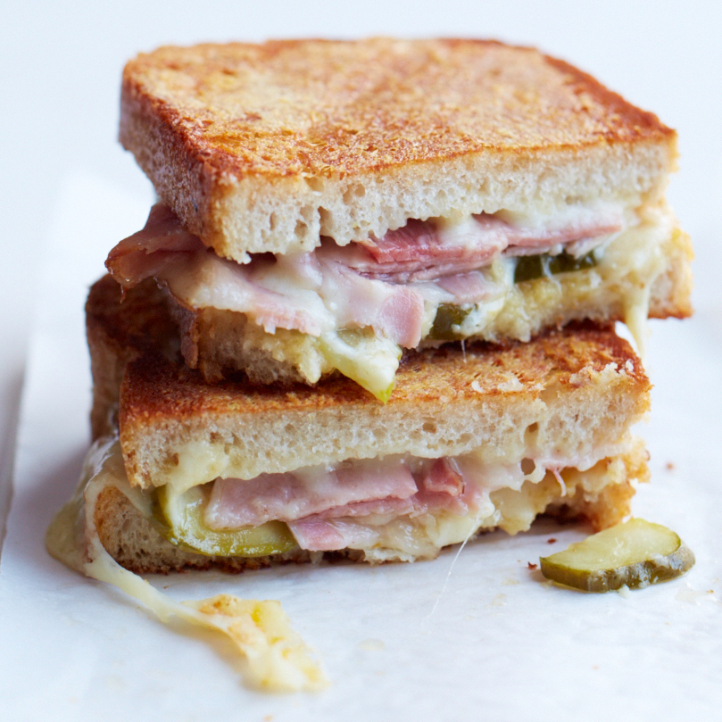

Perfect grilled cheese sandwich

How can you make a simple grilled cheese better?
The best way to improve on a great grilled cheese is to sprinkle some cheese on the outside of the bread. It creates a super-crisp, cheesy crust.
Ingredients
- 4 tablespoons unsalted butter, softened
- 8 slices of bakery Pullman bread
- 1/2 cup freshly grated Parmigiano-Reggiano cheese
- 1/2 pound sliced Swiss cheese, preferably Gruyère
- 8 ounces thinly sliced ham
- Dill pickle slices (optional)
- 2 tablespoons Dijon mustard
- 1/4 cup apricot preserves
Steps
- Butter each slice of bread and sprinkle with Parmigiano, pressing to help it adhere.
- Invert the slices onto a work surface, cheese side down.
- Top 4 of the slices with the Swiss cheese, ham and pickles.
- Mix the mustard and preserves and spread on the remaining 4 slices of bread.
- Close the sandwiches and griddle over moderate heat, turning, until golden, crisp on the outside and melted inside, about 3 minutes.
- Cut in half and serve right away.